Tecnologia e Bem-Estar: Um Site para Melhorar Vidas
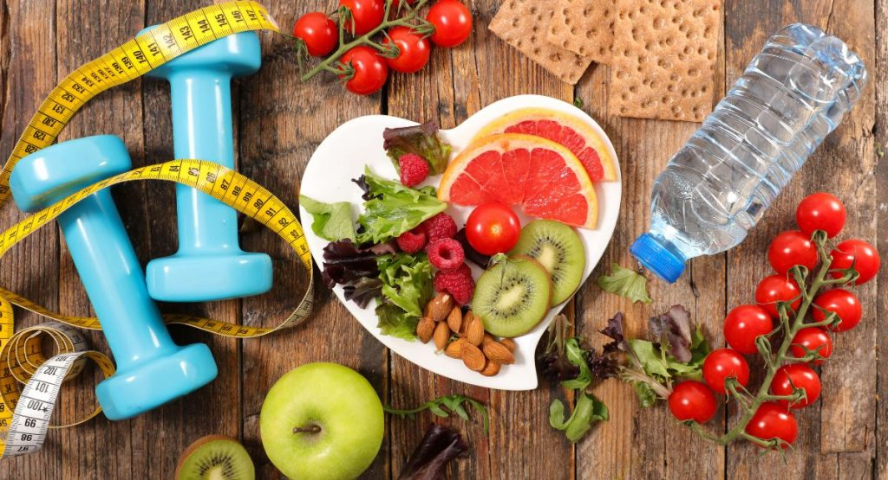
Bem-vindo ao meu site de Saúde e Bem-Estar!
Seu guia para uma vida mais saudável e feliz.
Artigos Recentes
A Importância da Alimentação Saudável
Manter uma alimentação saudável é essencial para garantir o bom funcionamento do corpo e da mente.
Comer bem ajuda a prevenir doenças, melhora o humor e aumenta a energia. Alimentos ricos em nutrientes, como frutas, verduras,
grãos integrais e proteínas magras, devem fazer parte do dia a dia.
Benefícios de uma Dieta Balanceada
Uma alimentação saudável proporciona diversos benefícios, como a prevenção de doenças crônicas (diabetes, hipertensão e doenças cardiovasculares),
a manutenção de um peso adequado e o fortalecimento do sistema imunológico. Além disso, uma dieta equilibrada melhora a digestão e contribui para a saúde da pele, cabelos e unhas.
Componentes Essenciais de uma Dieta Saudável
Para garantir uma nutrição adequada, é importante incluir uma variedade de alimentos em cada refeição:
Frutas e Verduras: Ricas em vitaminas, minerais e fibras, ajudam a manter o corpo funcionando corretamente.
Proteínas: Essenciais para a construção e reparação dos tecidos corporais. Boas fontes incluem carnes magras, ovos e nozes.
Grãos Integrais: Fornecem energia de forma sustentável e são ricos em fibras. Exemplos incluem arroz integral, quinoa e aveia.
Laticínios: Importantes para a saúde óssea devido ao seu alto teor de cálcio. Opte por opções com baixo teor de gordura.
Dicas para uma Alimentação Saudável
Adotar hábitos alimentares saudáveis pode ser mais fácil com algumas mudanças simples:
Planeje suas refeições: Isso ajuda a garantir que você tenha os ingredientes certos e evita escolhas alimentares pouco saudáveis.
Evite alimentos processados: Esses alimentos costumam ser ricos em açúcar, sal e gorduras não saudáveis.
Beba muita água: Manter-se hidratado é essencial para a saúde geral.
Cozinhe em casa: Preparar suas próprias refeições permite controlar os ingredientes e as porções.
Fonte: World Health Organization
A Importância da Prática de Exercícios Físicos
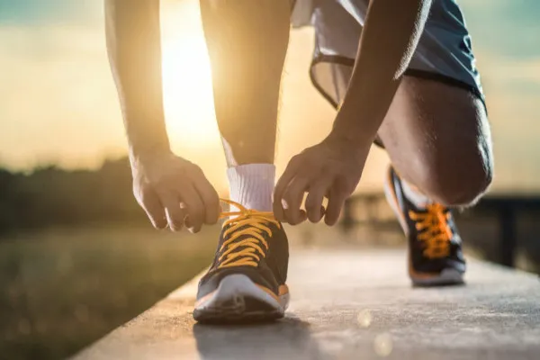
Praticar exercícios físicos regularmente é fundamental para manter o corpo e a mente saudáveis. A atividade física ajuda a prevenir doenças, melhora o humor e aumenta a energia. Exercícios variados, como caminhada, corrida, natação, e musculação, devem fazer parte da rotina diária.
Benefícios da Atividade Física
Os exercícios físicos proporcionam diversos benefícios, como a prevenção de doenças crônicas (diabetes, hipertensão e doenças cardiovasculares), a manutenção de um peso saudável e o fortalecimento do sistema imunológico. Além disso, a prática regular de atividades físicas melhora a qualidade do sono e contribui para a saúde mental, reduzindo sintomas de ansiedade e depressão.
Tipos de Exercícios Físicos
Para garantir uma rotina de exercícios completa, é importante incluir diferentes tipos de atividades:
Exercícios Aeróbicos: Aumentam a resistência cardiovascular e incluem atividades como caminhada, corrida, ciclismo e natação.
Exercícios de Força: Fortalecem os músculos e ossos. Exemplos incluem musculação, pilates e exercícios com peso corporal.
Exercícios de Flexibilidade: Melhoram a amplitude de movimento das articulações. Ioga e alongamentos são boas opções.
Exercícios de Equilíbrio: Importantes especialmente para idosos, ajudam a prevenir quedas. Tai chi e exercícios de equilíbrio específicos são recomendados.
Dicas para uma Vida Ativa
Adotar uma rotina de exercícios pode ser mais fácil com algumas mudanças simples:
Estabeleça uma rotina: Defina horários específicos para a prática de exercícios e mantenha a consistência.
Escolha atividades que você gosta: Isso aumenta a probabilidade de manter a prática a longo prazo.
Mantenha-se hidratado: Beber água antes, durante e após os exercícios é essencial.
Comece devagar: Se você é iniciante, comece com atividades leves e aumente a intensidade gradualmente.
Fonte: American Heart Association
A Importância da Saúde Mental e Bem-Estar
Cuidar da saúde mental é tão importante quanto cuidar da saúde física. Manter um bom estado mental ajuda a lidar com o estresse, relacionar-se bem com os outros e tomar decisões saudáveis. Atividades como meditação, exercícios físicos e manter conexões sociais podem contribuir significativamente para o bem-estar mental.
Benefícios de uma Boa Saúde Mental
Uma boa saúde mental proporciona diversos benefícios, como aumento da resiliência, melhor capacidade de enfrentar desafios e maior satisfação com a vida. Além disso, a saúde mental positiva está associada a uma melhor saúde física e a um menor risco de doenças crônicas.
Dicas para Melhorar a Saúde Mental
Para garantir uma boa saúde mental, é importante adotar algumas práticas simples:
Fale sobre seus sentimentos: Conversar com amigos, familiares ou um profissional pode ajudar.
Mantenha-se ativo: A atividade física regular contribui para a liberação de endorfinas, que melhoram o humor.
Reserve tempo para si mesmo: Faça atividades que você gosta e que relaxem.
Durma bem: O sono de qualidade é fundamental para a saúde mental.
Fonte: World Health Organization
A Importância da Hidratação
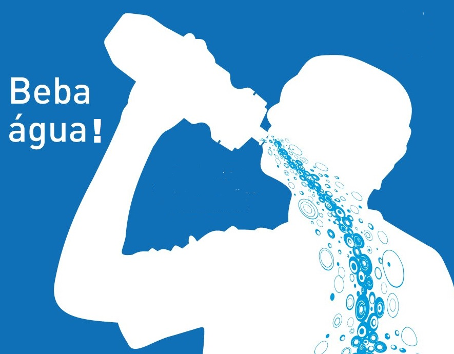
Manter-se bem hidratado é crucial para a saúde geral. A água é essencial para quase todas as funções do corpo, incluindo a regulação da temperatura, transporte de nutrientes e remoção de resíduos. Beber a quantidade adequada de água diariamente pode ajudar a manter os níveis de energia e melhorar a função cognitiva.
Benefícios da Hidratação Adequada
Uma hidratação adequada proporciona diversos benefícios, como a melhora da digestão, o bom funcionamento dos rins e a manutenção da saúde da pele. Além disso, beber bastante água pode ajudar a controlar o apetite e a manter um peso saudável.
Como Manter-se Hidratado
Para garantir uma boa hidratação, é importante adotar algumas práticas simples:
Beba água ao longo do dia: Não espere sentir sede para beber água.
Consuma alimentos ricos em água: Frutas e vegetais como melancia, pepino e laranja são ótimas opções.
Evite bebidas açucaradas: Prefira água pura ou infusões de ervas.
Leve uma garrafa de água: Isso facilita o acesso à água em qualquer lugar.
Fonte: National Institutes of Health
O Papel do Sono na Saúde
Ter uma boa noite de sono é essencial para a saúde física e mental. O sono adequado ajuda na recuperação do corpo, melhora a função cerebral e fortalece o sistema imunológico. A falta de sono pode levar a problemas como cansaço, dificuldade de concentração e aumento do risco de doenças crônicas.
Benefícios de um Sono de Qualidade
Um sono de qualidade proporciona diversos benefícios, incluindo melhora da memória, aumento da criatividade, e redução do estresse. Além disso, dormir bem ajuda a regular os hormônios que controlam o apetite, contribuindo para a manutenção de um peso saudável.
Dicas para Melhorar a Qualidade do Sono
Para garantir um sono de qualidade, é importante adotar algumas práticas simples:
Estabeleça uma rotina: Vá para a cama e acorde no mesmo horário todos os dias.
Crie um ambiente propício ao sono: Mantenha o quarto escuro, silencioso e a uma temperatura agradável.
Evite estimulantes: Reduza o consumo de cafeína e evite eletrônicos antes de dormir.
Pratique técnicas de relaxamento: Meditação e respiração profunda podem ajudar a relaxar antes de dormir.
Fonte: Sleep Foundation
Receitas Saudáveis
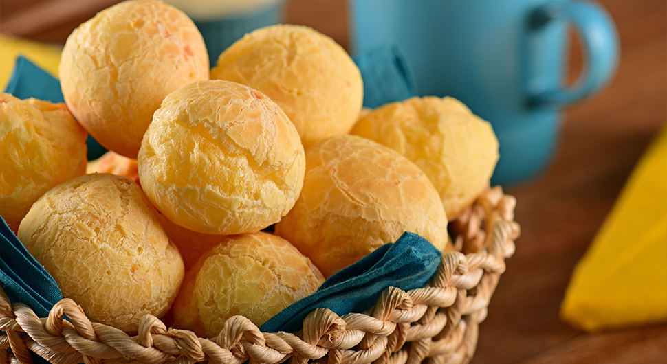
Pão de Queijo Fit
Ingredientes:
1 xícara de polvilho doce
1 xícara de polvilho azedo
1 xícara de purê de batata-doce
1/2 xícara de água
1/4 de xícara de azeite de oliva
Sal a gosto
Modo de preparo:
Misture todos os ingredientes até obter uma massa homogênea.
Faça bolinhas com a massa e coloque em uma assadeira.
Asse em forno pré-aquecido a 180°C por cerca de 20 minutos ou até dourar.
Moqueca de Peixe Light
Ingredientes:
500g de filé de peixe (tilápia, cação, etc.)
1 pimentão vermelho em rodelas
1 pimentão amarelo em rodelas
2 tomates em rodelas
1 cebola em rodelas
200ml de leite de coco light
2 colheres de sopa de azeite de dendê
Coentro a gosto
Sal e pimenta a gosto
Modo de preparo:
Em uma panela, coloque uma camada de cebola, uma de tomate e uma de pimentão.
Adicione os filés de peixe e tempere com sal e pimenta.
Repita as camadas de legumes e peixe.
Regue com o leite de coco e o azeite de dendê.
Cozinhe em fogo médio até o peixe estar cozido.
Finalize com coentro.
Feijão Tropeiro Light
Ingredientes:
2 xícaras de feijão-carioca cozido
1 cebola picada
2 dentes de alho picados
1 xícara de couve picada
1/2 xícara de farinha de mandioca
2 colheres de sopa de azeite de oliva
Sal e pimenta a gosto
Modo de preparo:
Em uma frigideira, aqueça o azeite e refogue a cebola e o alho.
Adicione a couve e refogue até murchar.
Misture o feijão cozido e tempere com sal e pimenta.
Adicione a farinha de mandioca aos poucos, misturando bem.
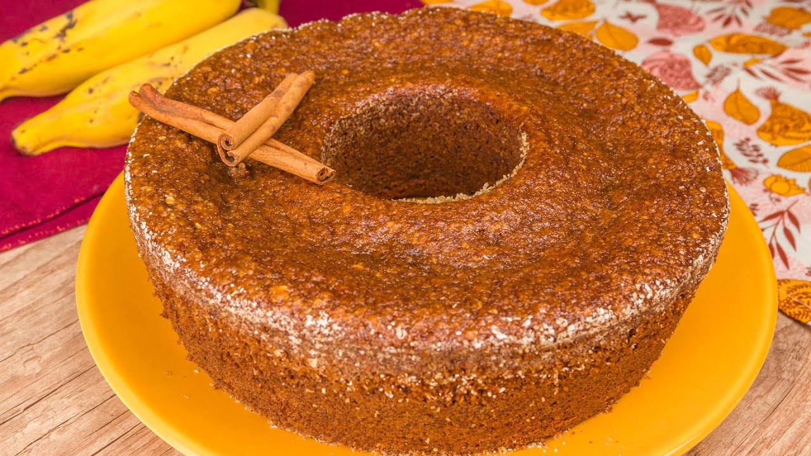
Bolo de Banana com Aveia
Ingredientes:
2 bananas maduras amassadas
2 ovos
1/2 xícara de aveia em flocos
1/4 de xícara de óleo de coco
1/2 xícara de farinha de trigo integral
1 colher de chá de fermento em pó
Canela a gosto
Modo de preparo:
Misture as bananas amassadas, os ovos e o óleo de coco.
Adicione a aveia, a farinha de trigo e o fermento, misturando bem.
Despeje a massa em uma forma untada.
Asse em forno pré-aquecido a 180°C por cerca de 30 minutos ou até dourar.
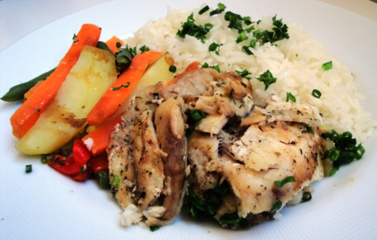
Tilápia Assada com Ervas
Ingredientes:
4 filés de tilápia
Suco de 1 limão
2 dentes de alho picados
2 colheres de sopa de azeite de oliva
Sal, pimenta e ervas (alecrim, tomilho, salsinha) a gosto
Modo de preparo:
Tempere os filés de tilápia com sal, pimenta, alho, ervas e suco de limão.
Coloque os filés em uma assadeira e regue com azeite de oliva.
Asse em forno pré-aquecido a 200°C por cerca de 20 minutos ou até o peixe estar cozido.
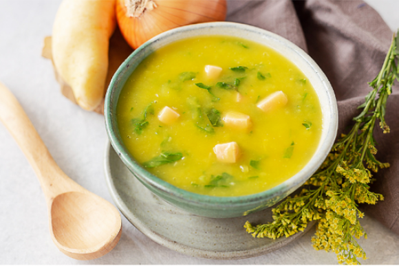
Caldo Verde Light
Ingredientes:
4 batatas descascadas e picadas
1 cebola picada
2 dentes de alho picados
1 maço de couve picada
2 colheres de sopa de azeite de oliva
Sal e pimenta a gosto
Modo de preparo:
Cozinhe as batatas com a cebola e o alho até ficarem macias.
Bata tudo no liquidificador até obter um creme.
Volte o creme para a panela e adicione a couve.
Cozinhe até a couve murchar.
Tempere com sal, pimenta e azeite de oliva.
Exercícios
Plano de Exercícios Físicos Semanal
Segunda-feira:
Cardio: 30 minutos de corrida leve ou caminhada rápida. Alongamento: 10 minutos para flexibilidade.
Terça-feira:
Treino de Força: 3 séries de 12 repetições de agachamentos, flexões de braço e abdominais. Descanso: Entre cada série, descanse por 1-2 minutos.
Quarta-feira:
Yoga ou Pilates: 45 minutos para melhorar a flexibilidade e fortalecer o core.
Quinta-feira:
Cardio Intervalado: Alternar entre 1 minuto de corrida rápida e 1 minuto de caminhada por 20 minutos. Alongamento: 10 minutos para relaxar os músculos.
Sexta-feira:
Treino de Força: 3 séries de 12 repetições de levantamento terra, flexões de braço e prancha. Descanso: Entre cada série, descanse por 1-2 minutos.
Sábado:
Atividade Recreativa: Como nadar, dançar ou fazer uma caminhada longa por 45 minutos.
Domingo:
Descanso Ativo: Yoga leve, caminhada suave ou alongamento por 30 minutos.
Lembre-se de aquecer antes de cada sessão de exercício e respeitar seus limites. Se você tiver alguma condição médica pré-existente, é sempre bom consultar um profissional antes de iniciar um novo programa de exercícios.
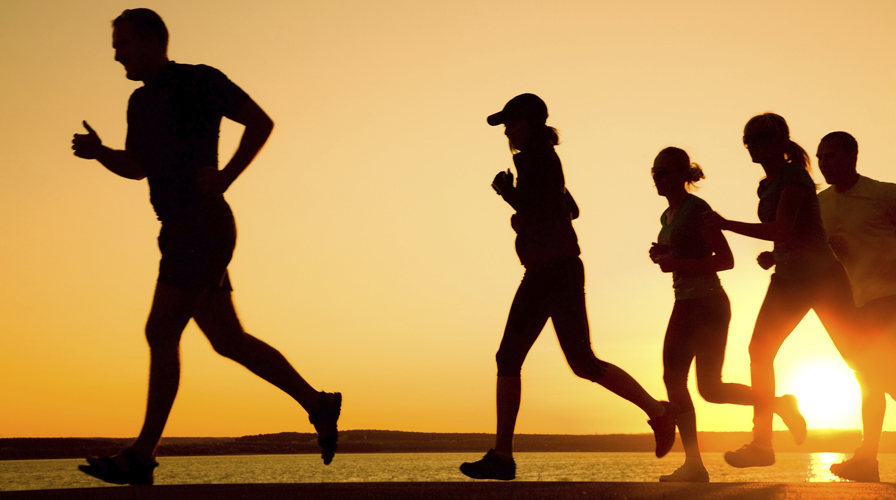
Caminhada
Benefícios:
Melhora a saúde cardiovascular.
Ajuda na perda de peso.
Reduz o risco de doenças crônicas como diabetes e hipertensão.
Fortalece os músculos das pernas e melhora a mobilidade.
Ciclismo
Benefícios:
Melhora a saúde cardiovascular.
Ajuda na perda de peso.
Fortalece os músculos das pernas e do core.
Melhora a resistência e a capacidade aeróbica.
Reduz o estresse e melhora a saúde mental.
Baixo impacto nas articulações.
Melhora a coordenação e o equilíbrio.
Promove a sociabilidade.
Benefícios ambientais.
Acessível e versátil.
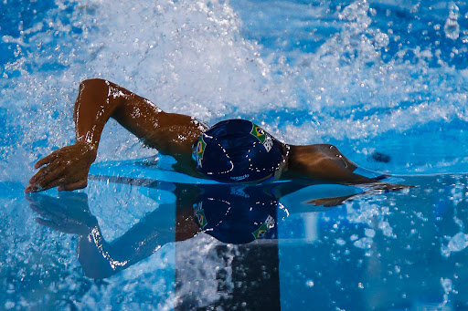
Natação
Benefícios:
Trabalha todos os músculos do corpo.
Melhora a saúde cardiovascular.
Baixo impacto nas articulações.
Ajuda a aumentar a capacidade pulmonar.
Reduz o estresse e melhora a saúde mental.
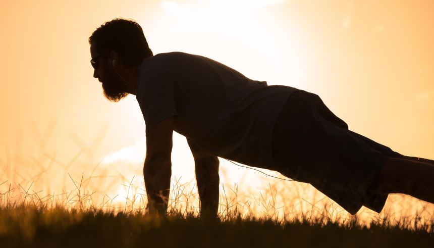
Flexões
Benefícios:
Fortalece os músculos peitorais, ombros e tríceps.
Melhora a resistência muscular.
Pode ser feito em qualquer lugar, sem necessidade de equipamento.
Melhora a estabilidade do core.
Aumenta a força funcional para atividades diárias.
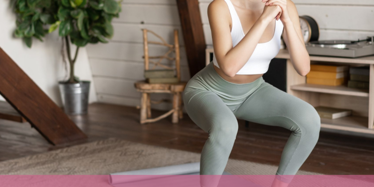
Agachamentos
Benefícios:
Fortalece os músculos das pernas e glúteos.
Melhora a estabilidade do core.
Aumenta a força funcional para atividades diárias.
Melhora a flexibilidade dos quadris e tornozelos.
Ajuda na prevenção de lesões.
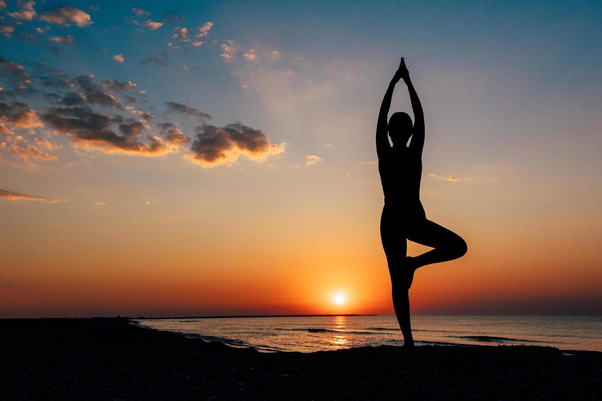
Yoga
Benefícios:
Melhora a flexibilidade e o equilíbrio.
Fortalece os músculos posturais.
Ajuda a aliviar o estresse e promove o relaxamento.
Melhora a concentração e a consciência corporal.